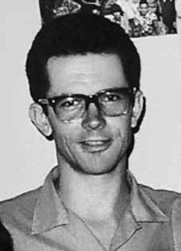

João
Carlos
Haas
Sobrinho
CIRCUNSTÂNCIAS DA MORTE
O Relatório Arroyo registra que João Carlos Haas Sobrinho, conhecido como Dr. Juca, da Guerrilha Araguaia, morreu em 30 de setembro de 1972, nas redondezas da área do Franco, por uma rajada de tiros de militares.
A documentação militar acerca do assunto aponta João Carlos apenas como desaparecido ou morto. O Relatório do Ministério do Exército, de 1993, citado pelo livro da CEMDP, afirma que ele teria desaparecido em 1972.
Já no Relatório do Ministério da Marinha do mesmo ano, ele consta como morto em Xambioá. O Relatório do Centro de Informações do Exército (CIE), de 1975, ratifica sua morte no ano 1972.
The Arroyo Report records that João Carlos Haas Sobrinho, known as Dr. Juca, from the Araguaia Guerrilla, died on September 30, 1972, on the outskirts of the Franco area, by a volley of military shots.
The military documentation on the subject only lists João Carlos as missing or dead. The 1993 Ministry of the Army Report, cited in the CEMDP book, states that he disappeared in 1972.
In the Ministry of the Navy's report from the same year, he was listed as dead in Xambioá. The Army Information Center Report (CIE), from 1975, confirms his death in 1972.
El Informe Arroyo registra que João Carlos Haas Sobrinho, conocido como Dr. Juca, de la Guerrilla de Araguaia, murió el 30 de septiembre de 1972, en las afueras de la zona franquista, por una andanada de disparos militares.
La documentación militar sobre el tema sólo enumera a João Carlos como desaparecido o muerto. El Informe del Ministerio del Ejército de 1993, citado en el libro del CEMDP, afirma que desapareció en 1972.
En el informe del Ministerio de Marina del mismo año figuraba como muerto en Xambioá. El Informe del Centro de Información del Ejército (CIE), de 1975, confirma su muerte en 1972.